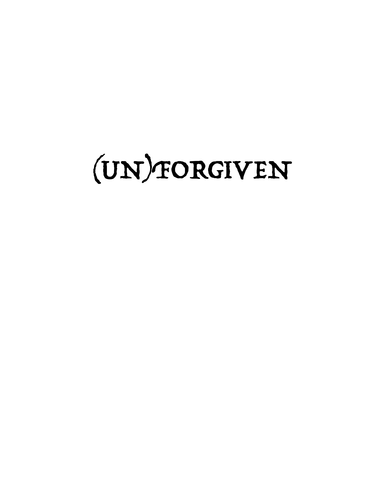

Artistic Book Design — 2024
(UN)FORGIVEN
In this book, I experimented for the first time with turning poems I had written in the past into visual designs. I explored how typography, image placement, pacing, and contrast could give each poem a visual identity while connecting the individual pages into a complete book.
